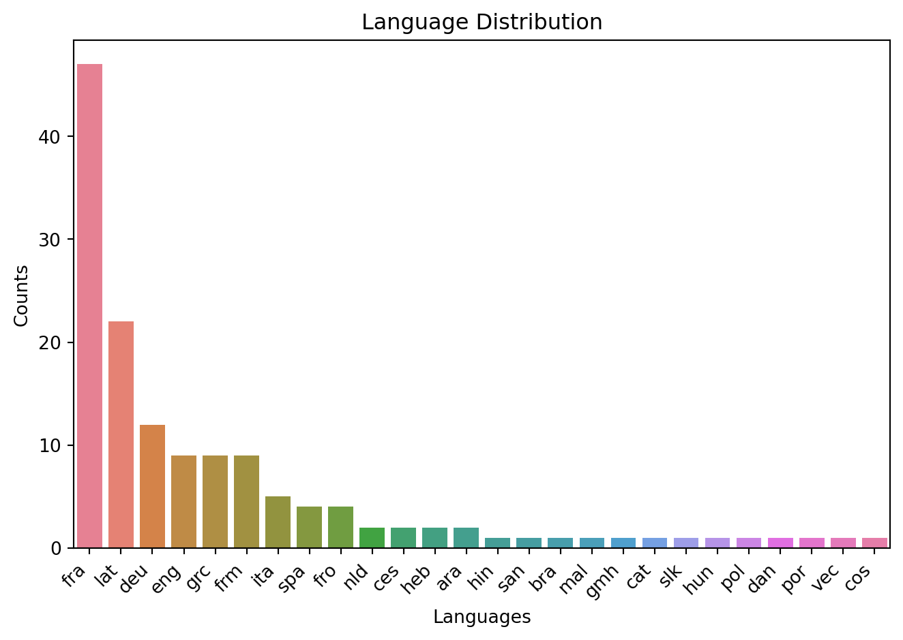
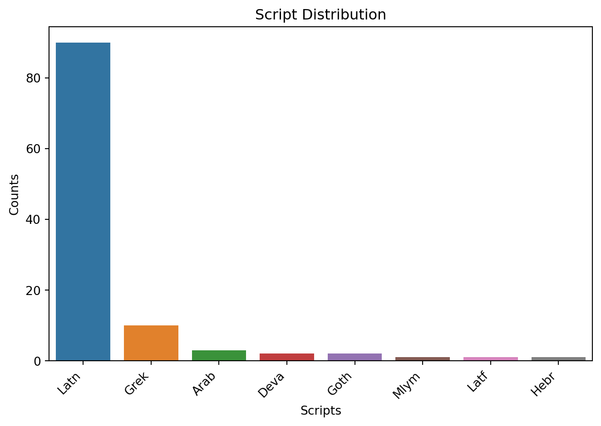
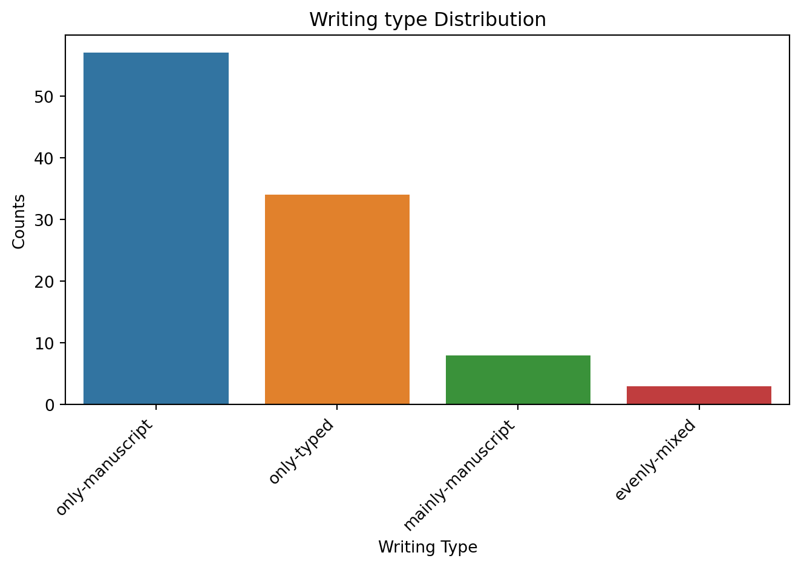
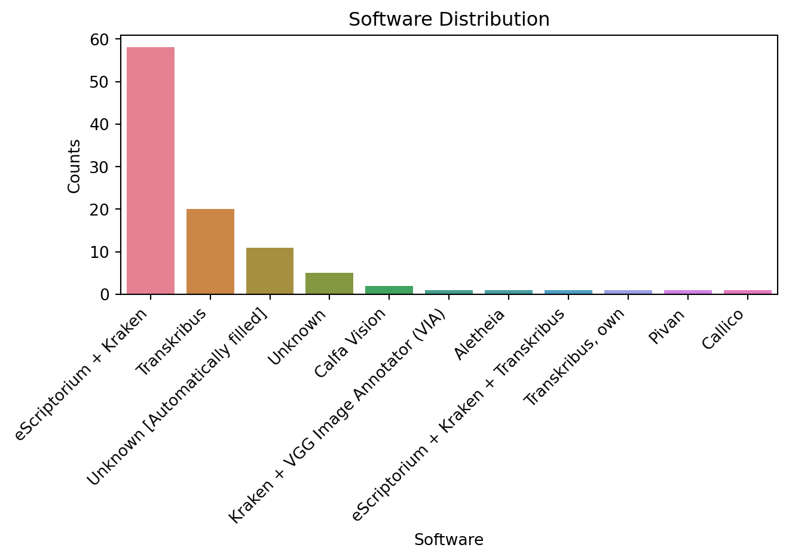

Code
# install necessary packages
import requests
#import zipfile
import json
import os
from collections import Counter
import yaml
import seaborn as sns
import matplotlib.pyplot as plt
from pprint import pprint
#from urllib import requestThis page offers an overview of the latest content of the HTR-United catalog. The visualizations are normally updated frequently. Feel free to check that the HTR-United’s catalog version listed below does indeed correspond to the latest version available for the catalog (here).
HTR-United is a catalog that lists highly documented training datasets used for automatic transcription or segmentation models. HTR-United standardizes dataset descriptions using a schema, offers guidelines for organizing data repositories, and provides tools for quality control and continuous documentation. It’s an open and transparent ecosystem hosted on GitHub, designed for easy maintenance. HTR-United was created to help projects quickly access diverse ground truth data for training models on smaller collections.
This page is only dedicated to a generic oversight of the content of the catalog, mainly in the form of plots. If you want to browse the datasets listed in the catalog, there is a more suitable interface for that here.
# install necessary packages
import requests
#import zipfile
import json
import os
from collections import Counter
import yaml
import seaborn as sns
import matplotlib.pyplot as plt
from pprint import pprint
#from urllib import request# function to built the bar plots
def make_bar_plot(counted_data, title, xlabel):
sorted_data = sorted(counted_data.items(), key=lambda x: x[1], reverse=True)
labels = [item[0] for item in sorted_data]
counts = [item[1] for item in sorted_data]
# Create the bar chart
#plt.bar(labels, counts)
# Create a bar plot using Seaborn
sns.barplot(x=labels, y=counts, hue=labels)
# Add labels and rotation for better visibility
plt.xlabel(xlabel)
plt.ylabel('Counts')
plt.xticks(rotation=45, ha='right')
# Add a title
plt.title(title)
# Display the chart
plt.tight_layout() # Ensures labels are not cut off
plt.show()
# function to change the lists are shown
def pretty_list_of_projects(most_common_projects):
pretty_list = ""
for common_project in most_common_projects:
pretty_list += f"\t{common_project[0].strip()} - {common_project[1]} datasets.\n"
return pretty_list[:-1]# fetch latest version of the catalog
url_latest = "https://api.github.com/repos/htr-united/htr-united/releases/latest"
r = requests.get(url_latest)
if r.status_code == 200:
github_url = r.json().get("html_url", "")
htr_united_version = github_url.split("/")[-1]
if github_url:
# let's build the url to the latest yaml file
github_url = github_url.replace("/releases/tag/", "/").replace("/github.com/", "/raw.githubusercontent.com/") + "/htr-united.yml"
r_yml = requests.get(github_url)
if r_yml.status_code == 200:
# now let's download the yaml file
with open("htr-united.yml", "w", encoding="utf8") as fh:
fh.write(r_yml.text)
print("We are currently computing \nthe content of HTR-United's \ncatalog", htr_united_version)
else:
print("Couldn't connect to", github_url, "got status code", r_yml.status_code)
else:
print("Couldn't connect to", url_latest, "got status code", r.status_code)
# Load the YAML file as a JSON file
yaml_file_path = "htr-united.yml"
json_file_path = "htr-united.json"
if os.path.exists(yaml_file_path):
with open(yaml_file_path, "r") as yaml_file:
data = yaml.safe_load(yaml_file)
# at this point we could remove yaml_file_path but I keep it for history.We are currently computing
the content of HTR-United's
catalog v0.1.150languages = []
for entry in data:
if entry.get("language"):
languages = languages + entry.get("language")
counted_lgges = Counter(languages)
print(f"There are {len(counted_lgges)} languages represented in the catalog.")
print(f"The top 5 languages represented are:")
for cl in counted_lgges.most_common(5):
print(f"{cl[0]} = {cl[1]} times")
make_bar_plot(counted_lgges, title='Language Distribution', xlabel="Languages")There are 26 languages represented in the catalog.
The top 5 languages represented are:
fra = 47 times
lat = 22 times
deu = 12 times
eng = 9 times
grc = 9 times
scripts_dict = []
for entry in data:
if entry.get("script"):
scripts_dict = scripts_dict + entry.get("script")
scripts = []
for sd in scripts_dict:
scripts.append(sd["iso"])
counted_scripts = Counter(scripts)
print(f"There are {len(counted_scripts)} scripts represented in the catalog.")
print(f"The top 5 scripts represented are:")
for cs in counted_scripts.most_common(5):
print(f"{cs[0]} = {cs[1]} times")
make_bar_plot(counted_scripts, title='Script Distribution', xlabel="Scripts")There are 8 scripts represented in the catalog.
The top 5 scripts represented are:
Latn = 90 times
Grek = 10 times
Arab = 3 times
Deva = 2 times
Goth = 2 times
script_types = [entry.get("script-type") for entry in data if entry.get("script-type")]
counted_script_types = Counter(script_types)
pprint(counted_script_types)
make_bar_plot(counted_script_types, title='Writing type Distribution', xlabel="Writing Type")Counter({'only-manuscript': 57,
'only-typed': 34,
'mainly-manuscript': 8,
'evenly-mixed': 3})
softwares = [entry.get("production-software") for entry in data if entry.get("production-software")]
counted_softwares = Counter(softwares)
pprint(counted_softwares)
make_bar_plot(counted_softwares, title='Software Distribution', xlabel="Software")Counter({'eScriptorium + Kraken': 58,
'Transkribus': 20,
'Unknown [Automatically filled]': 11,
'Unknown': 5,
'Calfa Vision': 2,
'Kraken + VGG Image Annotator (VIA)': 1,
'Aletheia': 1,
'eScriptorium + Kraken + Transkribus': 1,
'Transkribus, own': 1,
'Pivan': 1,
'Callico': 1})
# nb of datasets in the catalog
nb_of_datasets = len(set([entry.get("title") for entry in data if entry.get("title")]))
# nb of projects contributing to the catalog (and signaled)
projects = [entry.get("project-name", "unknown") for entry in data if entry.get("project-name")]
nb_of_projects = len(Counter(projects))
biggest_project_contributers = Counter(projects).most_common(5)
nb_of_datasets_from_projects = len([entry.get("title") for entry in data if entry.get("project-name")])
# time span
times = [entry.get("time") for entry in data if entry.get("time")]
earliest = min([int(time['notBefore']) for time in times])
latest = max([int(time['notAfter']) for time in times])
# let's see the result
print(
f"There are {nb_of_datasets} datasets listed in the catalog",
f"At least {nb_of_projects} identified projects contributed a total of {nb_of_datasets_from_projects} datasets listed in the catalog",
f"The projects which contributed the most to the catalog are:",
pretty_list_of_projects(biggest_project_contributers),
f"The catalog covers a period going from the year {earliest} to the year {latest}",
sep="\n"
)There are 102 datasets listed in the catalog
At least 44 identified projects contributed a total of 83 datasets listed in the catalog
The projects which contributed the most to the catalog are:
FoNDUE - 13 datasets.
CREMMA - 8 datasets.
Gallicorpora - 5 datasets.
HTRomance - 5 datasets.
HTR Winter School 2022, Vienna - 4 datasets.
The catalog covers a period going from the year -250 to the year 2023metrics = {
'images': 0,
'characters': 0,
'lines': 0,
'files': 0,
'pages': 0,
'regions': 0}
#{'images', 'characters', 'lines', 'files', 'pages', 'regions'}
for entry in data:
for vol in entry.get("volume", []):
metrics[vol["metric"]] += vol["count"]
pprint(metrics){'characters': 65042609,
'files': 25334,
'images': 150,
'lines': 1688436,
'pages': 27451,
'regions': 152980}